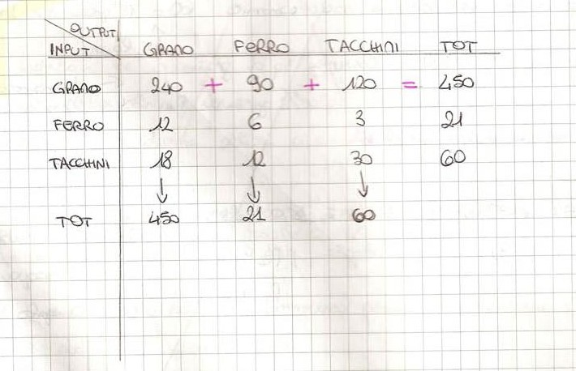
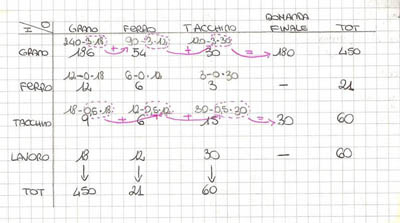
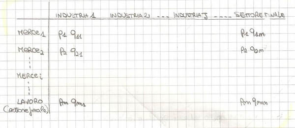
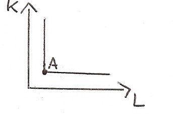

Torna alla pagina di Economia del Cambiamento Tecnologico
:: Economia del Cambiamento Tecnologico ::
Lezione 12/12/2008
Esempio di Piero Sraffa(1960)
Riprende la tavola I/O e la modifica per ottenere il risultato desiderato.
Ipotesi:
- nel sistema socioeconomico esistono solo 3 settori produttivi
Passi successivi:
- si indicano le quantità
- nella prima riga come totale si ha l'output del settore del grano (pari a 450), venduta (ripartita sulla riga) in quantità diverse nei diversi settori a seconda delle esigenze produttive e di consumo (rispettivamente 240, 90, 120)
- la combinazione degli input della prima colonna sarà ancora 450. Il settore del grano produce quindi 450 quintali di grano combinando 3 tipi di fattori produttivi (sulla colonna riportiamo ad esempio 240 quintali, 12 quintali e 18 grosse per i tacchini (grossa:unità di misura poco più grande della dozzina))

[Nota: i valori in riga si sommano perchè rappresentano le quantità prodotte da quel dato settore mentre i valori in colonna non sono per il momento (perchè espressi ancora in quantità e non in moneta) sommabili. Però la combinazione degli imput dà la quantità di output riportata nella riga corrispondente.]
- introduciamo ora il settore delle famiglie che mette a disposizione lavoro (che introdurremo in riga) e contemporaneamente rappresenta una parte della domanda finale costituita dai consumi(che introdurremo in colonna)
Ipotesi:
- ci sono 60 lavoratori nel sistema socioeconomico ripartiti 18 nel settore grano, 12 nel ferro, 30 nei tacchini e rappresentano l'input lavoro
- ciascun lavoratore consuma 3 quintali di grano e 1/2 grossa di tacchini e rappresenterà la domanda finale

Introduzione del sistema dei prezzi

Da questa matrice esce un isoquanto ad angolo retto (come già visto con la forma degli isoquanti).

Keynes(o meglio Hicks l'ha tradotto in formula...sto stronzo si è preso tutto il merito)
La produzione di un sistema socioeconomico in condizioni di equilibrio è uguale alla spesa.
Chi formula la domanda di prodotti secondo Keynes?
- famiglie ( C-> consumi)
- stato (G-> governo)
- imprese (I-> interessi)
- non residenti nel sistema socioeconomico considerato (consumatori/famiglie, imprese estere-> X-> export da cui però dobbiamo togliere M->import dall'estero)
Perciò la formula è:
Y = C + G + I + (X - M)
Torna alla pagina di Economia del Cambiamento Tecnologico